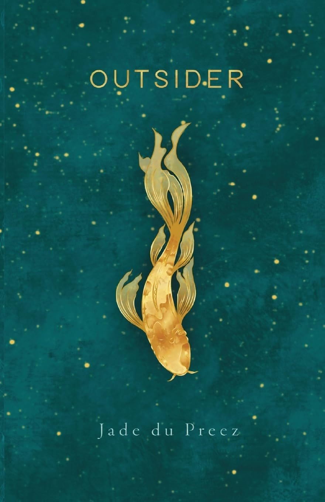

The novel

Outsider
Tokyo, 2017. Weeks from a birthday that will see her older than her mother ever was, Antoinette wants two things: a way to explain her Master's thesis on light as memory, and the truth about whether her mother's death was an accident or a suicide. Then a long-lost pen-pal returns to her life.
Kyou, the top star of a gender-bending nabe bar, needs an out, some cash and an identity. As an unregistered mukoseki, she is a legal anomaly. Across Japan and down to New Zealand, their searches for the truth intertwine.
Jade
I'm a fiction writer based in Tāmaki Makaurau Auckland. My work explores identity, belonging, culture and connection, with a particular interest in where Aotearoa New Zealand and Japan meet.
Outsider is my first novel. It came out in February 2024, and the launch was at Time Out Bookstore in Auckland.
Where I've set up a stall
Indie Writers Festival, Te Manawa, 11 Kohuhu Lane, Massey, Auckland. Free entry, over 30 stalls for indie writers, publishers and comic artists.
Find me on Instagram and in the NZ Society of Authors directory.